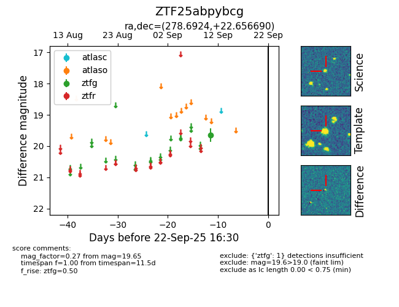

FINK: ZTF25abpybcg
Lasair: ZTF25abpybcg
ALeRCE: ZTF25abpybcg
ZTF25abpybcg (ztf,fink)
equatorial (ra, dec) = (278.6924,+22.65669)
galactic (l, b) = (51.6721,+13.61107)

last ztfg=19.65
1 ztfg detections